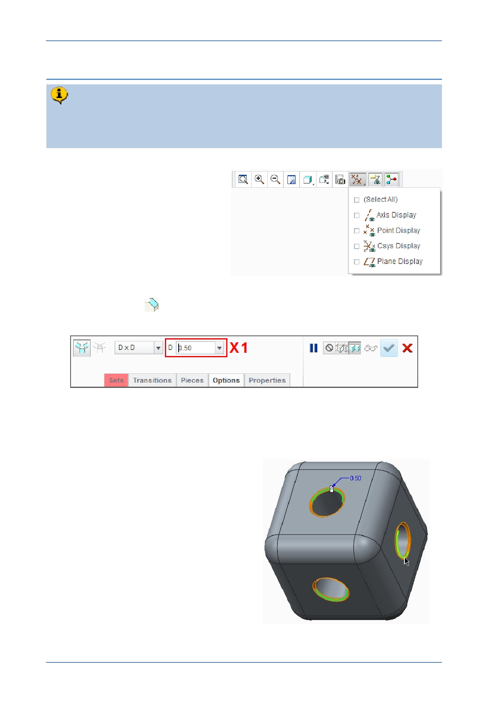

PTC Academic Program
Step 9: Chamfer edges of the holes
The Chamfer feature is an “ Engineering ” type feature applied to edges of a
model. You will now add 0.5 mm chamfers to the six edges of the holes that
intersect the outer surfaces of the cube.
1. Press CTRL + D to reorient the
model.
2. If necessary, disable the display of
all datum features.
3. Start the Chamfer
tool from the Engineering group of the Model tab.
Notice the Chamfer dashboard and its feature specific options.
4. Defining the size of the chamfer:
In the dashboard, edit the chamfer width X1 to be 0.5 and press ENTER .
5. Selecting the edges to chamfer:
Click to select one of the edges
shown in green .
Press CTRL and select the other two
edges shown in green .
© 2012 PTC
Creo Parametric 2.0 Primer
Page 41